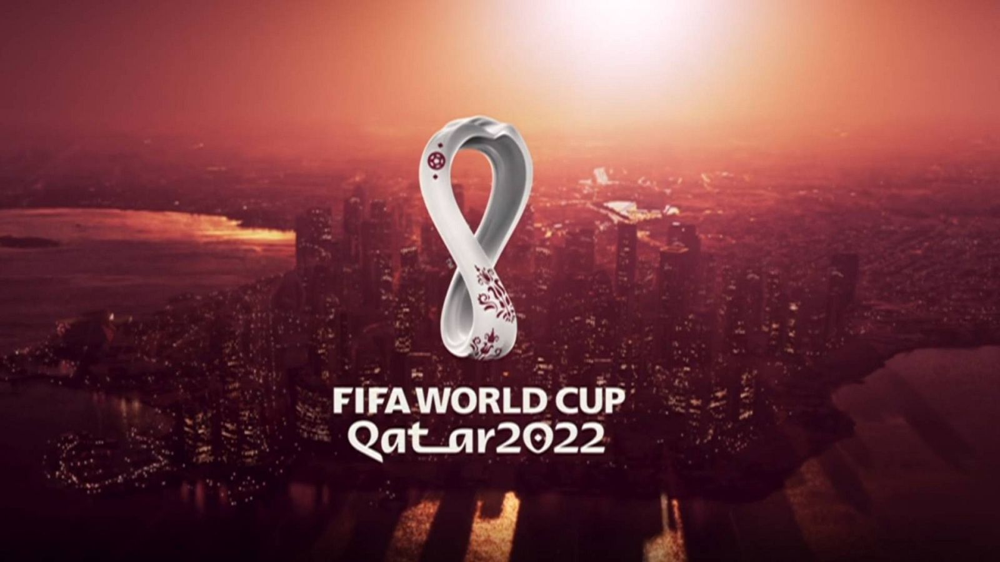
La Copa Mundial de la FIFA Catar 2022 fue la vigésima segunda edición de la Copa Mundial de Fútbol masculino organizada por la FIFA.
Qatar
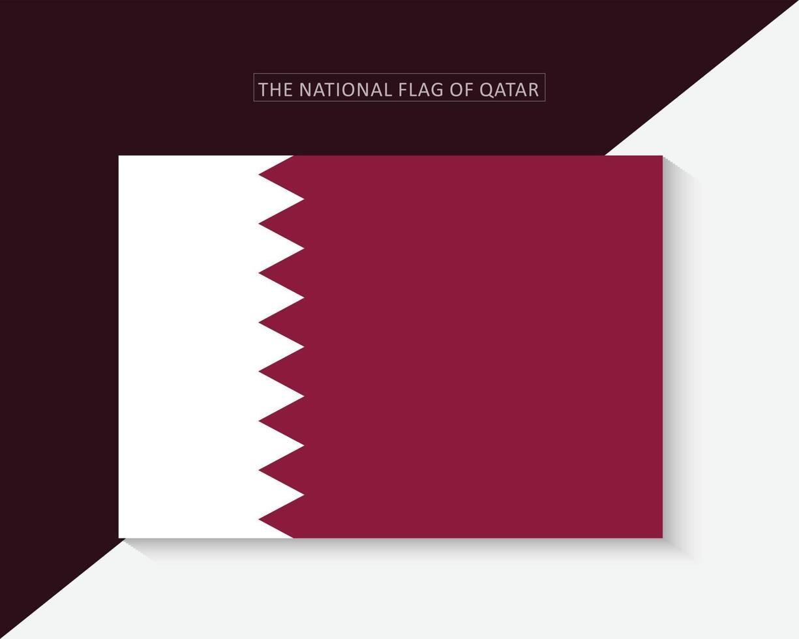
Catar es un estado soberano del Golfo Pérsico, en Oriente Medio, rico en petróleo y gas
natural, que obtuvo su independencia del Reino Unido en 1971.
Con su capital en Doha, el país ha
experimentado una rápida modernización y expansión económica, destacando por su alta urbanización,
cultura
islámica y organización de eventos globales como el Mundial de la FIFA 2022.
Es una de las naciones más ricas del mundo por habitante debido a sus reservas de gas
lo que
ha impulsado la construcción de infraestructura moderna.
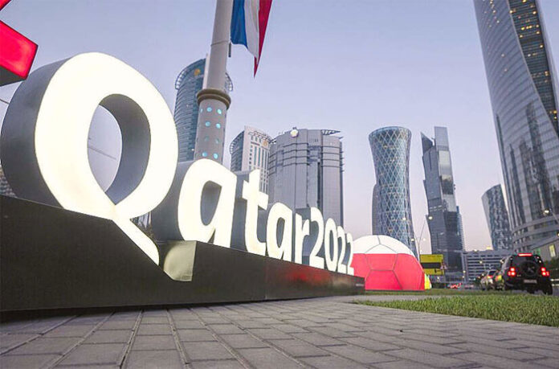
Estadios Utilizados
Al Bayt

Lusali
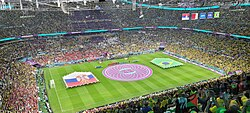
Al Thumama

Estadio 934
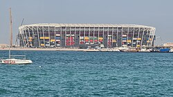
Estadio Ciudad de la Educacion
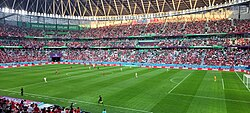
Ahmad Bin Ali

Estadio Internacional Khalifa
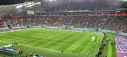
Al Janoub
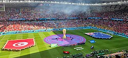
Grupos
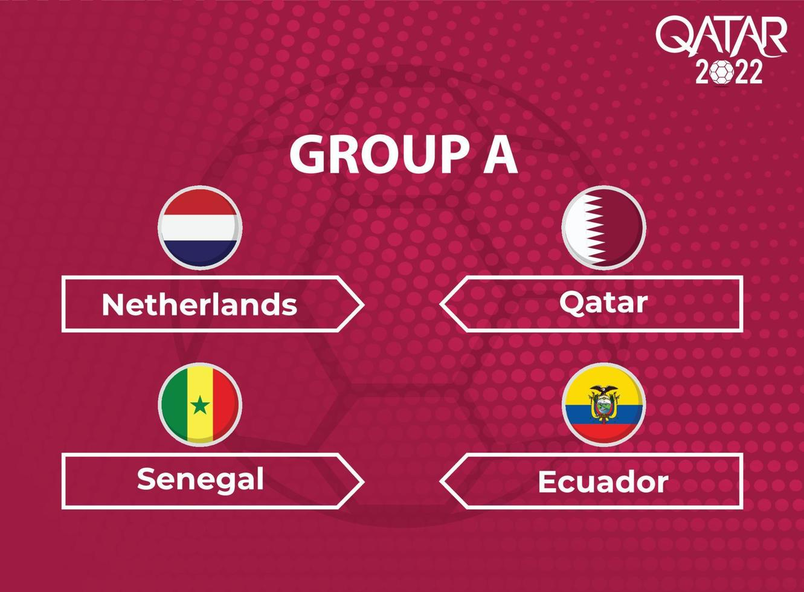
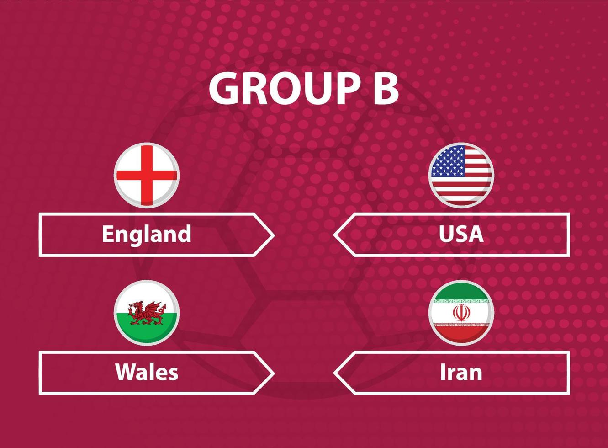
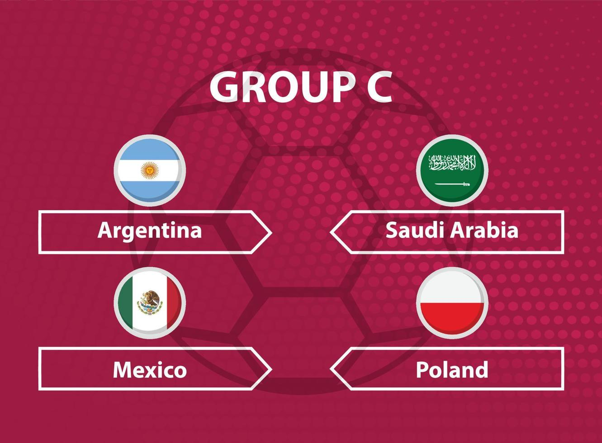
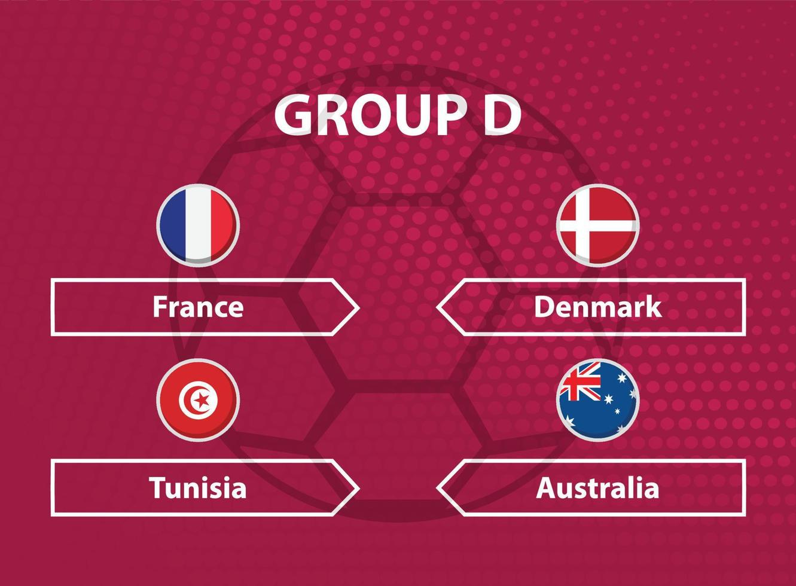
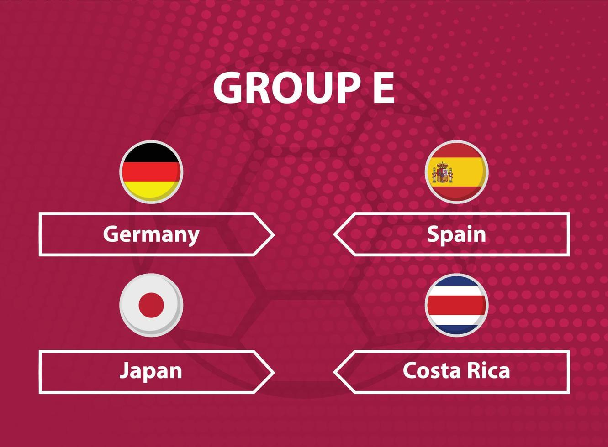
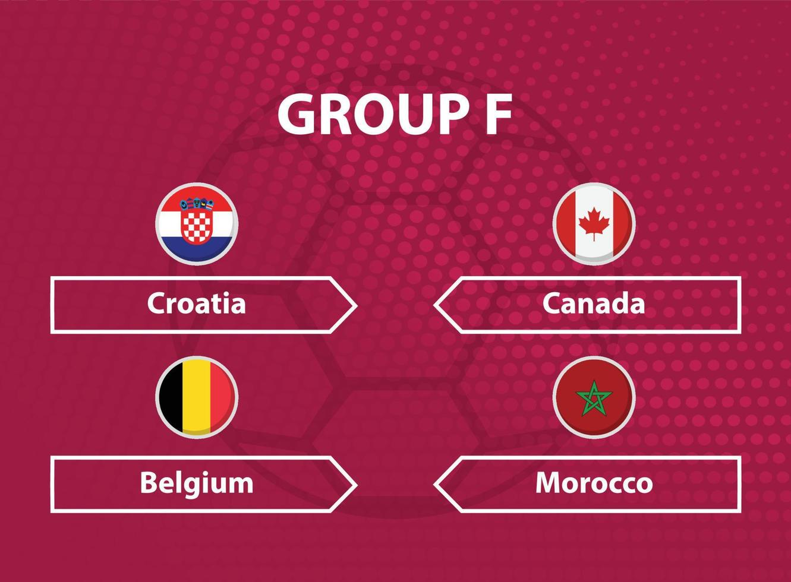
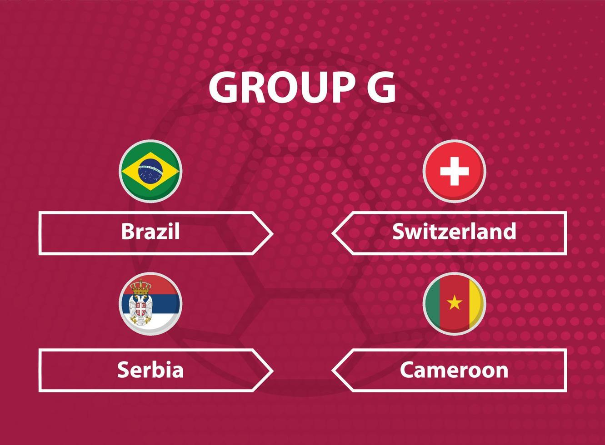
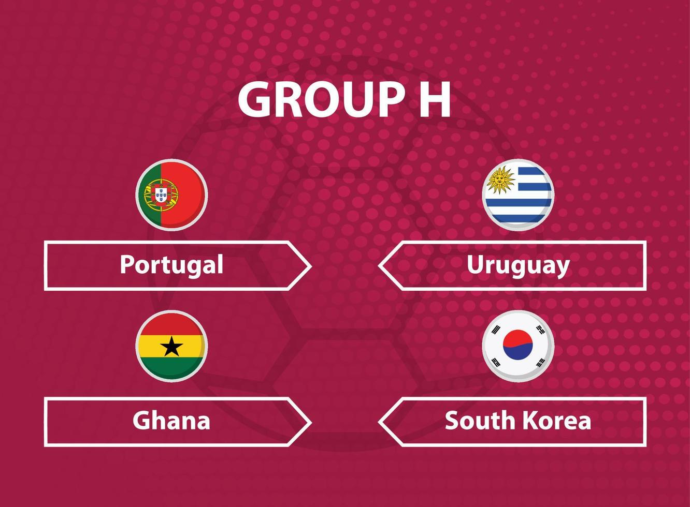
La fase de grupos del Mundial de Catar 2022 se caracterizó por sorpresas históricas, como la victoria de Arabia Saudita sobre Argentina o la eliminación prematura de Alemania y Bélgica. En total, 16 selecciones avanzaron a los octavos de final tras disputar tres partidos cada una en sus respectivos grupos.
Campeon
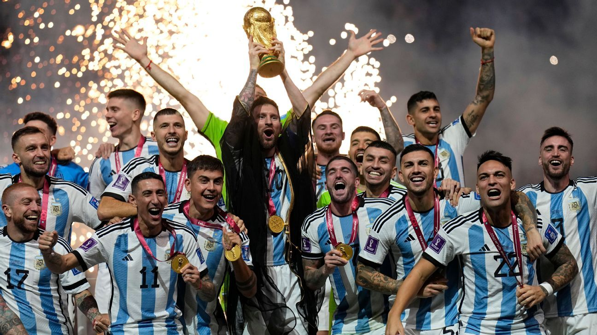
El 18 de diciembre de 2022, Argentina venció a Francia en una tanda de penaltis (4-2) tras empatar 3-3 en un partido que incluyó prórroga.
Fases Finales
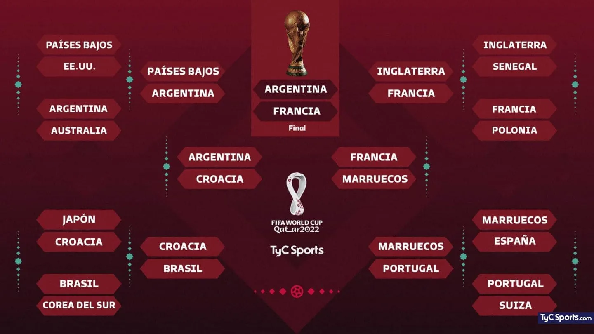
Final:
Argentina se consagró campeona por tercera vez en su historia tras empatar 3-3 en el tiempo
reglamentario y prórroga, definiendo el título en una tanda de penales (4-2) donde Lionel Messi alzó
su primera Copa del Mundo.
Revelación:
Marruecos hizo historia al convertirse en la primera selección africana en alcanzar unas semifinales
de un Mundial.
Octavos de Final:
Los cruces destacaron por victorias contundentes de selecciones como Brasil (4-1 a Corea del Sur) y
Portugal (6-1 a Suiza), mientras que Japón y España quedaron eliminados en penales.